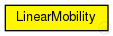

This documentation is released under the Creative Commons license
This documentation is released under the Creative Commons licenseThis is a linear mobility model with speed, angle and acceleration parameters. Angle only changes when the mobile node hits a wall: then it reflects off the wall at the same angle.
NOTE: Does not yet support 3-dimensional movement.
See also: ConnectionManager
Author: Emin Ilker Cetinbas
The following diagram shows usage relationships between types. Unresolved types are missing from the diagram. Click here to see the full picture.
| Name | Type | Description |
|---|---|---|
| BaseMobility | simple module |
Module which is responsible for mobility related information like position and movement BaseMobility itself defines a static mobility pattern (means only a position, no movement). Mobility modules which extend from this module will define more complex movement patterns. |
| Name | Type | Default value | Description |
|---|---|---|---|
| notAffectedByHostState | bool | true | |
| x | double |
x coordinate of the nodes' position (-1 = random) |
|
| y | double |
y coordinate of the nodes' position (-1 = random) |
|
| z | double |
z coordinate of the nodes' position (-1 = random) |
|
| xOrientation | double | 1 | |
| yOrientation | double | 0 | |
| zOrientation | double | 0 | |
| speed | double |
speed of the host (in m/s) |
|
| angle | double |
angle of linear motion (degreees) |
|
| acceleration | double |
acceleration of linear motion (m/s2) |
|
| updateInterval | double |
time interval to update the hosts position (seconds) |
| Name | Value | Description |
|---|---|---|
| class | veins::LinearMobility | |
| display | i=block/cogwheel |
| Name | Type | Unit |
|---|---|---|
| org_car2x_veins_base_modules_mobilityStateChanged | veins::BaseMobility |
This documentation is released under the Creative Commons license